An illustrated guide
Normal Space is defined by not being an Token Zone (you don't have to pay a fee to enter), and not being Territory Space.
All Survey/miners are protected when UPC. Survey ships are represented with the drill icon:
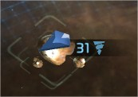There are some exceptions to this rules:
Botany Bay is ONLY protected in augment space:
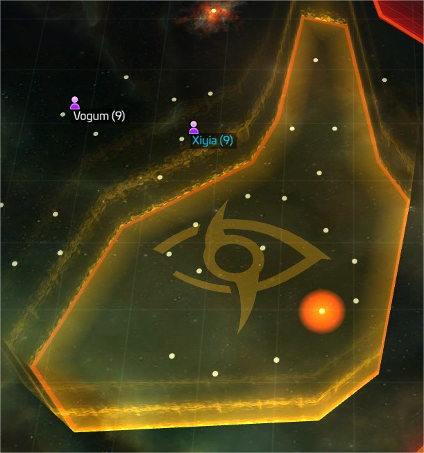Dvor Ferengi is ONLY protected while mining raw latinum:
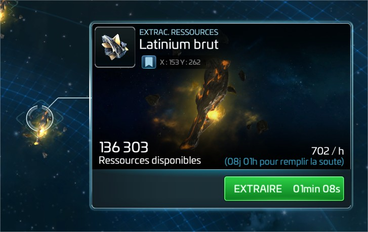Dvor Feesha is ONLY protected while mining concentrated latinum:
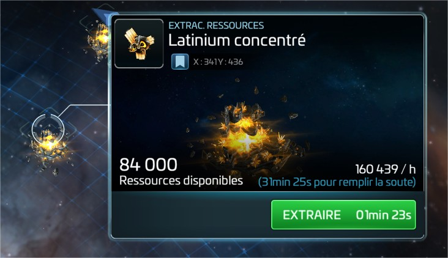Discovery is ONLY protected while mining Mycelium:
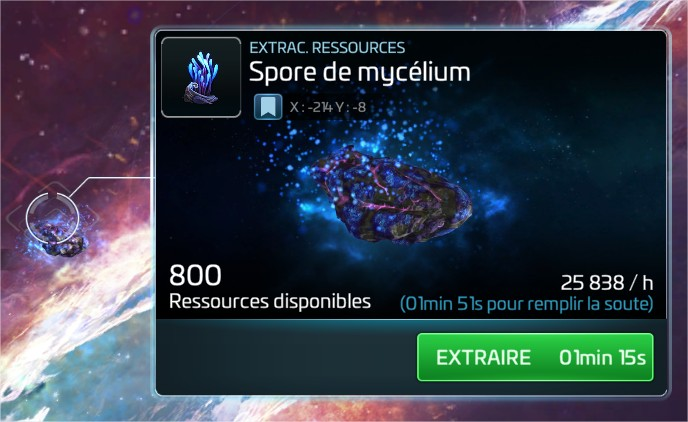Franklin class are ONLY protected while hunting in Swarm Space. These ships are protected UPC AND OPC. Swarm Space can be seen in those nebulas:
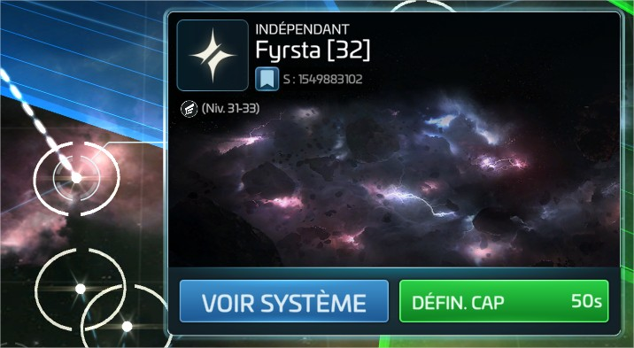and are populated with thoses ennemies (and thoses ennemies only):
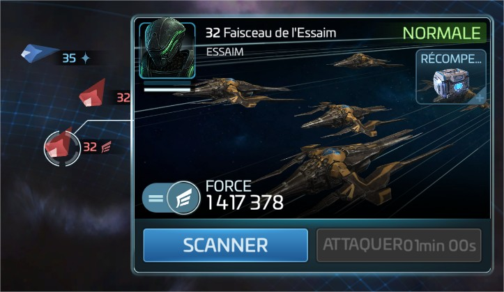Most of the time, you'll want to know if a ship mining is Over Protected Cargo (OPC). To do so, you will need to scan the ship:
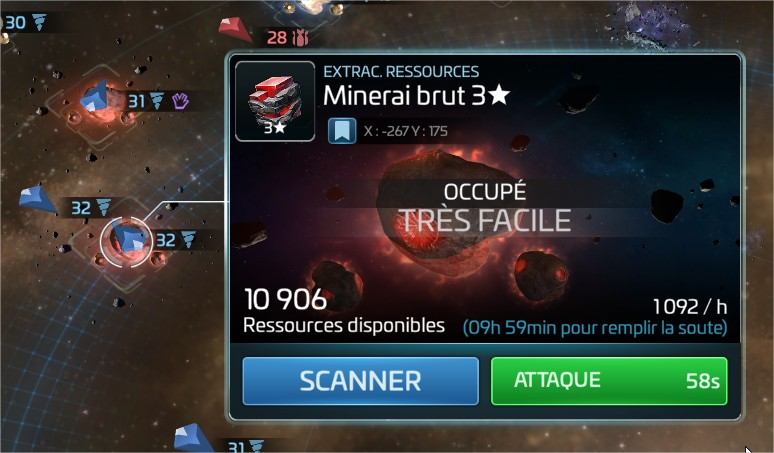Once you've scanned the ship, you will see that it is either UPC (and most of the time protected):
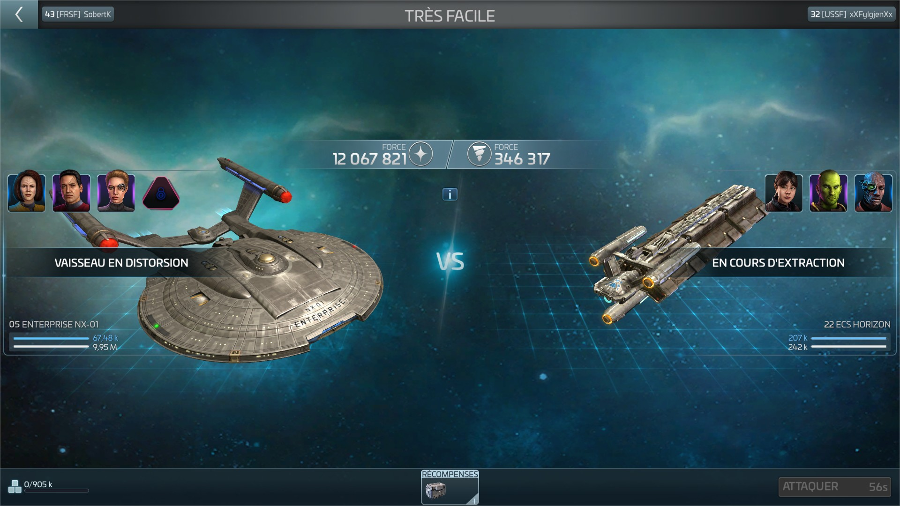Or it can be Over Protected Cargo, OPC, and most of the time ready to be killed:
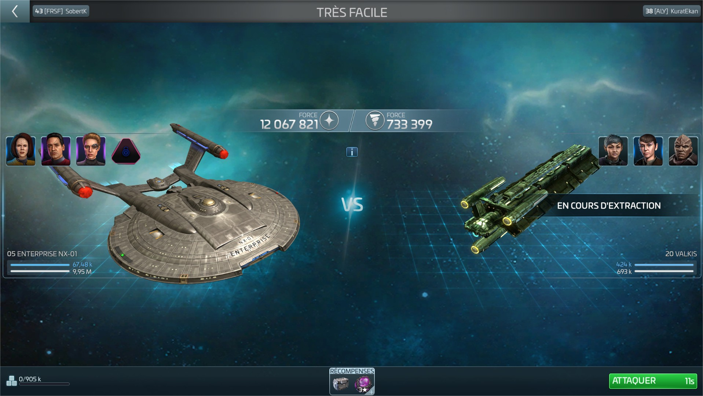Notice the difference: the UPC one doesn't have anything else than a chest in the rewards, while the OPC one is overflowing with resources and they're up for the grab.
To see if you are OPC, you can check that you are not over your protected cargo:
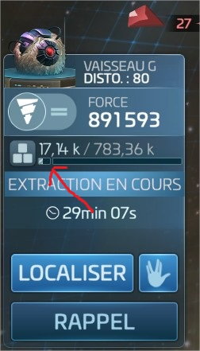In the battle report of the kill, you will be able to see if the ennemy got some resources while killing you:
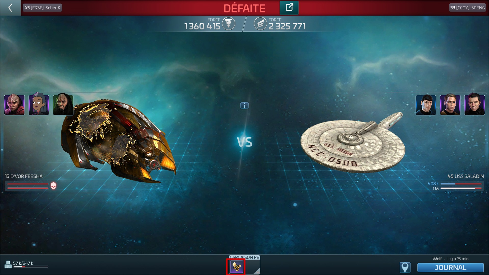Rascal, I'll get back to you, but only following the RoE.
There are different steps to achieve good collaboration between players: